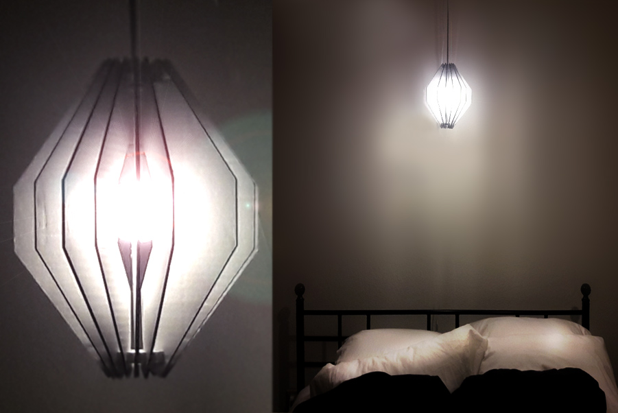

A3: 3D printing + lasercutting lamp!

Write up of process: 3D print connector piece
- Brainstormed design ideas with pencil and cardboard
- Did extensive hand made prototypes to validate structural integrity
- With prototype validated, created a new file in Rhino
- Using calipers, measured width of cardboard = 3mm
- Using Grasshopper, set the width of the parametric "slot connector" rectangles 3mm, subtracted rectangles from desired shape
- Used region difference to create the "slot pieces" I needed
- Exported .stl file from Rhino
- Imported into XYZ print for Da Vinci Mini W+
- Printed ring using Da Vinci Mini W+
Write up of process: 2D cardboard "fin" pieces
- Brainstormed design ideas with pencil and cardboard
- Did extensive hand made protoypes to validate structural integrity
- With protoype validated, created matching file in Adobe Illustrator
- Used laser cutter at The Mill to create cardboard "fin" pieces
- Test fit into 3D connector = success!
- Completed press fit construction
Problems in project and how I resolved them
- 1st time set up of Da Vinchi Printer = easy
- Download of print drivers and help documentation from company website = nightmare
- Resolved through perseverance, foul language and patience
- Followed measure twice, cut (print) once scenario using many hand made prototypes = success!
- Fit challenges: Granular level of tolerances. Ring must be big enough for plug and switch to pass through, yet small enough to rest on housing
File screenshots
Source files
- A3 Rhino file Download source file
- A3 Grasshopper file Download source file
- Cardboard "fin" Illustrator file Download source file
DaVinci Mini W+ Machine settings
- 1st time set up of DaVinci Mini W+
- Imported file from Rhino
- Used XYZ printing from the software
- Success! The connecting rings printed as I hoped for
Laser Cutter operation and printing
- Installed the focus key
- Raised the z axis table height until light contact was with the cardboard
- Removed the key
- Hit File, Print, selected the laser cutter
- Set the print dialog box to the matching "piece size"
- Set laser cutting settings to the following:
- Speed = 25
- Power = 100
- Frequency = 100
- Hit OK to send the file
- Success! The patterns cut as I hoped for

Peer-attribution
- Special thanks to @Irina Smoke, who worked with me to set up the laser cutter settings